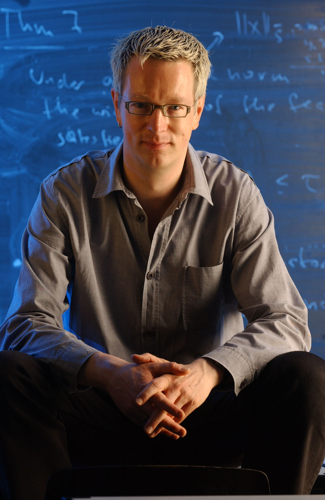

As usual, we will have two invited speakers this year, one internal and one external. They have been chosen by popular vote. We're looking forward to their talks!
Prof. Dr. Claudio Arezzo
University of Parma
For more information, visit his webpage at the University of Parma.
(Photo source: https://www.ictp.it/member/claudio-arezzo)
Prof. Dr. Günter Ziegler
Free University of Berlin
More information can be found on his webpage at the mathematical institute of FU Berlin or at his webpage as president of FU Berlin.
(Photo by Sandro Most, source: https://en.wikipedia.org/wiki/G%C3%BCnter_M._Ziegler)